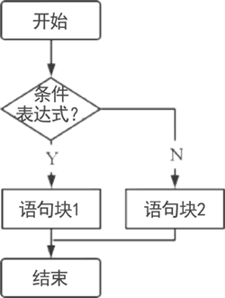
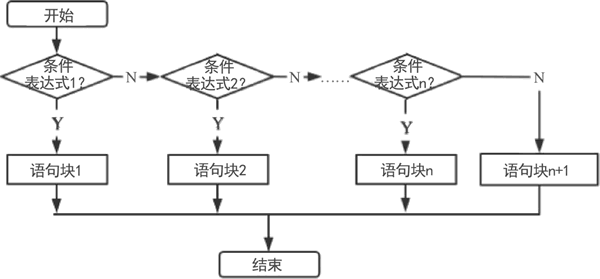

首页 > 编程笔记
Java if else语句详解
分支结构又称为选择结构，根据计算所得的表达式的值来判断应该执行哪个流程的分支。Java 提供了 if 和 switch 两种分支语句，本节重点讲解 if 分支语句的用法。
if 分支语句又可以细分为 if 单分支语句、if-else 双分支语句和 if-else if-else 多分支语句。
例如：
if-else 双分支结构的流程图如下图所示。
需要注意以下几点。
例如：
【实例】if-else if-else多分支结构的应用。
if 分支语句又可以细分为 if 单分支语句、if-else 双分支语句和 if-else if-else 多分支语句。
if单分支语句
if 单分支语句的语法格式如下：
if(条件表达式){
语句块
}
上述语句的执行逻辑如下：如果条件表达式的值为 true，那么执行语句块；如果为 false，那么跳过该语句块。简单来说，应该根据条件表达式的结果选择是否执行语句块。例如：
if(age < 18){
System.out.println("未成年"); // 当变量 age 的值小于 18 时才会执行
}
if-else 双分支结构
if-else 双分支结构的语法格式如下：
if(条件表达式){
语句块1
}else{
语句块2
}
上述语句的执行逻辑如下：如果条件表达式的值为 true，那么执行语句块 1；如果为 false，那么执行语句块 2，即根据条件表达式的值选择执行语句块 1 还是语句块 2。if-else 双分支结构的流程图如下图所示。

图 1 if-else双分支结构的流程图
图 1 if-else双分支结构的流程图
需要注意以下几点。
- 条件表达式的值应该是布尔类型的。
- 当语句块 1 和语句块 2 中仅有一行代码时，在语法上可以省略语句块前后的花括号。
- 从代码可读性的角度来看，建议不要省略花括号。
例如：
if(age < 18){
System.out.println("未成年"); // 当变量 age 的值小于 18 时执行
}else{
System.out.println("已成年"); // 当变量 age 的值大于 18 时执行
}
if-else if-else多分支语句
if-else if-else 是多条件、多分支结构，即根据多个条件来控制程序执行的流程，语法格式如下：
if(条件表达式1){
语句块1
}
else if(条件表达式2){
语句块2
}
......
else{
语句块n
}
if-else if-else多分支结构的流程图如下图所示。

图 2 if-else if-else多分支结构的流程图
图 2 if-else if-else多分支结构的流程图
【实例】if-else if-else多分支结构的应用。
public class Example {
public static void main(String[] args) {
int scores = 87;
String grade;
if (scores >= 90 && scores <= 100) {
grade = "优秀";
} else if (scores >= 80) {
grade = "良好";
} else if (scores >= 70) {
grade = "中等";
} else if (scores >= 60) {
grade = "及格";
} else {
grade = "不及格";
}
System.out.println(scores + "分的等级： " + grade);
}
}
运行结果为：
87分的等级：良好
关注公众号「站长严长生」，在手机上阅读所有教程，随时随地都能学习。内含一款搜索神器，免费下载全网书籍和视频。

微信扫码关注公众号